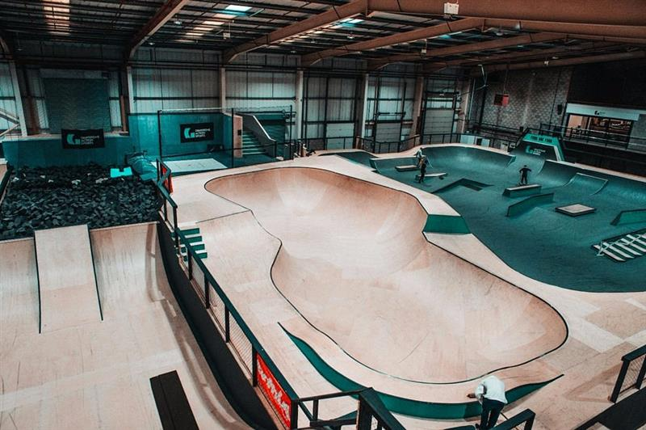
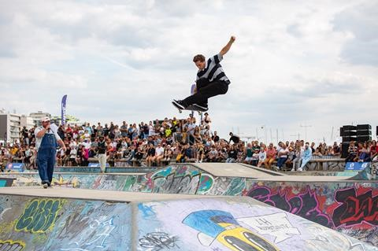
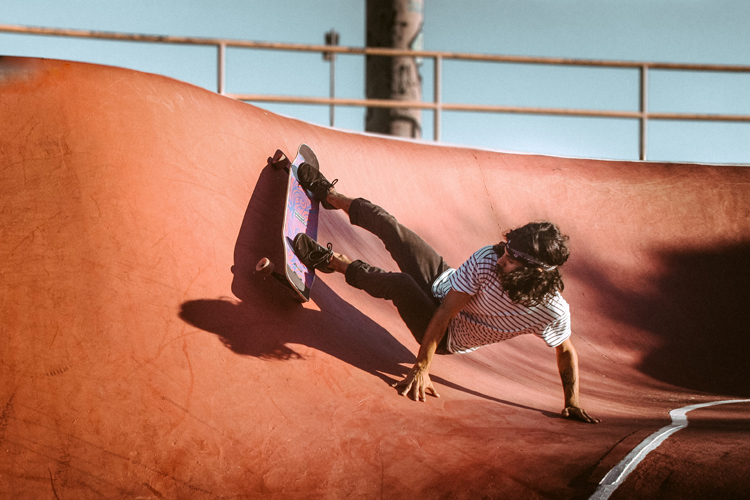

FOUR STOPS TO GO BEFORE THE WORLD ROOKIE SKATEBOARD FINALS 2022 15th September 2022 Last chance to qualify for the finals in Innsbruck... 
WORLD ROOKIE SKATEBOARD FINALS IN LESS THAN A MONTH 4th September 2022 Skatehalle Innsbruck, Austria, 30 Sept. – 2 Oct. 2022 - Registrations are open
FISE XPERIENCE SERIES LE HAVRE RESULTS 1st September 2022 The last stop of the FISE French Tour Aug 26-28th was a blast! Get all the results here... 
THE SCIENCE OF LONGBOARD WHEELS 1st September 2022 Back in the day, there were very few decisions that had to be made regarding what types of wheels... 
BEST FOOT FORWARD OSLO RECAP 16th August 2022 What a 10th tourstop it was! Here's the latest from Blue Tomato's great Best Foot Forward Tour...